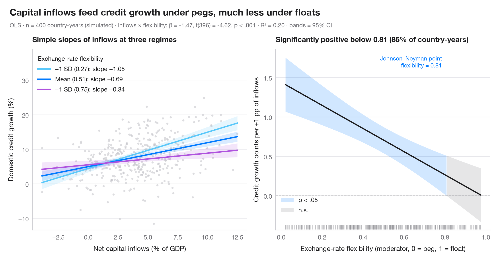

交互作用効果
平均 ± 1 SD における単純傾斜とジョンソン・ネイマン・プロット。資本流入と信用の伸びの関係を、為替レートの柔軟性が調整します。

交互作用項は、ある説明変数の傾きが別の変数に依存することを表します。左のパネル では、調整変数の3つの値（平均と ±1 標準偏差）におけるその傾きを、それぞれ 95% 信頼帯とともに描いています。右のパネル はジョンソン・ネイマンの視点によるもので、注目する説明変数の限界効果 β₁ + β₃·moderator を、調整変数の範囲全体にわたって 95% 信頼区間とともに示しています。帯がゼロを含まない範囲では効果は有意であり、その切り替わる点がジョンソン・ネイマン点です。
設定は Stojkov & Warin (2021, Global Economy Journal) による、マンデルのトリレンマの観点から見た外国資本と国内の資金調達条件の研究です。データは説明のために シミュレーション したもので、論文のデータや結果ではありません。n = 400 国・年で、目的変数は国内信用の伸び率（%）、注目する説明変数は純資本流入（GDP 比 %）、調整変数は為替レートの柔軟性指数（0 = 固定相場、1 = 完全な変動相場）で、smf.ols("credit ~ inflows * flex") を用いています。固定相場では資本流入が信用の伸びの加速と結びつき、為替レートの変動が自由になるにつれてその関連は弱まります。限界効果の分散は cov_params() から手計算しています：Var(β₁) + 2m·Cov(β₁, β₃) + m²·Var(β₃)。
コードおよび図中のテキストは英語です。
import matplotlib.pyplot as plt
import numpy as np
import pandas as pd
import statsmodels.formula.api as smf
from scipy import stats
# Simulated data, set in the context of Stojkov & Warin (2021) [stojkov2021credit]
# Data: 400 country-years; inflows raise credit growth less as flexibility rises
rng = np.random.default_rng(2021)
n = 400
df = pd.DataFrame({"inflows": rng.normal(4, 3, n), "flex": rng.beta(1.5, 1.5, n)})
df["credit"] = (5 + 1.2 * df.inflows + 1.5 * df.flex - 1.3 * df.inflows * df.flex
+ rng.normal(0, 5, n))
model = smf.ols("credit ~ inflows * flex", data=df).fit()
b, V = model.params, model.cov_params()
t_crit = stats.t.ppf(0.975, model.df_resid)
fig, (ax1, ax2) = plt.subplots(1, 2, figsize=(11, 5))
# Left: simple slopes of inflows at flexibility = mean − 1 SD, mean, mean + 1 SD
ax1.scatter(df.inflows, df.credit, s=12, color="#C7C7CC", alpha=0.6, lw=0)
x = np.linspace(df.inflows.min(), df.inflows.max(), 100)
m, s = df.flex.mean(), df.flex.std()
for f, lab, c in [(m - s, "−1 SD", "#5AC8FA"), (m, "Mean", "#007AFF"), (m + s, "+1 SD", "#AF52DE")]:
pred = model.get_prediction(pd.DataFrame({"inflows": x, "flex": f})).summary_frame()
ax1.fill_between(x, pred.mean_ci_lower, pred.mean_ci_upper, color=c, alpha=0.15, lw=0)
ax1.plot(x, pred["mean"], color=c, lw=2.2,
label=f"{lab} ({f:.2f}): slope {b['inflows'] + b['inflows:flex'] * f:+.2f}")
ax1.legend(title="Exchange-rate flexibility", loc="upper left", alignment="left")
ax1.set_ylim(top=df.credit.max() + 14)
ax1.set_xlabel("Net capital inflows (% of GDP)")
ax1.set_ylabel("Domestic credit growth (%)")
ax1.set_title("Simple slopes of inflows at three regimes", fontsize=12)
# Right: Johnson–Neyman — marginal effect of inflows across flexibility, with 95% CI
flex = np.linspace(df.flex.min(), df.flex.max(), 400)
eff = b["inflows"] + b["inflows:flex"] * flex
se = np.sqrt(V.loc["inflows", "inflows"] + 2 * flex * V.loc["inflows", "inflows:flex"]
+ flex**2 * V.loc["inflows:flex", "inflows:flex"])
lo, hi = eff - t_crit * se, eff + t_crit * se
sig = (lo > 0) | (hi < 0)
ax2.axhline(0, color="#8E8E93", lw=1, ls="--")
ax2.fill_between(flex, lo, hi, where=sig, color="#007AFF", alpha=0.18, lw=0, label="p < .05")
ax2.fill_between(flex, lo, hi, where=~sig, color="#AEAEB2", alpha=0.3, lw=0, label="n.s.")
ax2.plot(flex, eff, color="#1D1D1F", lw=2)
jns = flex[1:][np.diff(sig.astype(int)) != 0] # where significance switches
for jn in jns:
ax2.axvline(jn, color="#007AFF", lw=1, ls=":")
ax2.annotate(f"Johnson–Neyman point\nflexibility = {jn:.2f}", (jn, 0.97), xytext=(-8, 0),
xycoords=ax2.get_xaxis_transform(), textcoords="offset points",
fontsize=9.5, color="#007AFF", va="top", ha="right")
# Rug of the observed moderator values
ax2.plot(df.flex, np.full(len(df), 0.015), "|", ms=7, color="#8E8E93", alpha=0.4,
transform=ax2.get_xaxis_transform())
share = (df.flex < jns[0]).mean()
ax2.legend(loc="lower left", bbox_to_anchor=(0, 0.06))
ax2.set_xlabel("Exchange-rate flexibility (moderator, 0 = peg, 1 = float)")
ax2.set_ylabel("Credit growth points per +1 pp of inflows")
ax2.set_title(f"Significantly positive below {jns[0]:.2f} ({share:.0%} of country-years)", fontsize=12)
# Figure title and statistical subtitle above both panels
p_int = model.pvalues["inflows:flex"]
p_txt = "p < .001" if p_int < 0.001 else f"p = {p_int:.3f}"
fig.text(0.01, 1.07, "Capital inflows feed credit growth under pegs, much less under floats",
fontsize=15, fontweight="semibold", va="bottom")
fig.text(0.01, 1.02, f"OLS · n = {int(model.nobs)} country-years (simulated) · inflows × flexibility: "
f"β = {b['inflows:flex']:.2f}, t({model.df_resid:.0f}) = {model.tvalues['inflows:flex']:.2f}, "
f"{p_txt} · R² = {model.rsquared:.2f} · bands = 95% CI",
fontsize=9.5, color="#6E6E73", va="bottom")
plt.show()
図にはオプションの PyStatlas スタイル を使用しています。同じ見た目にするには plt.style.use("pystatlas.mplstyle") を追加してください。
データの出典
- Simulated data. Simulated data with a fixed random seed, created for this example.
No real respondents, documents or measurements: the numbers only illustrate how the chart and its statistics work. - Stojkov & Warin (2021), foreign capital and domestic funding conditions. Stojkov, A., & Warin, T. (2021). Foreign capital and domestic funding conditions: A Mundellian trilemma perspective. Global Economy Journal, 21, 2150008. https://doi.org/10.1142/s2194565921500081
The example is set in the context of this paper; unless its description says otherwise, the numbers are simulated and are not the paper's data or results.
これらの例は統計手法を説明するためのものです。項目に別の記載がない限り数値はシミュレーションであり、図のタイトルはこのシミュレーションデータで図が示す内容を述べたものです。引用した論文の知見でも、実質的な問いに対する著者の立場でもありません。結果、背景、データについては、ここに挙げた論文を参照してください。
引用方法
PyStatlas は Thierry Warin が作成・運営しています。研究や業務に役立った場合は、ぜひ引用してください。
Warin, T. (2026). Interaction effects. In PyStatlas: A Python Gallery of Statistical Graphics for the Social Sciences (Version 1.1.0) [Computer software]. https://warint.github.io/pystatlas/regression-models/interaction-effects/
@misc{warin2026statlas,
author = {Warin, Thierry},
title = {PyStatlas: A Python Gallery of Statistical Graphics for the Social Sciences},
year = {2026},
version = {1.1.0},
howpublished = {\url{https://warint.github.io/pystatlas/}},
note = {Source code: https://github.com/warint/pystatlas}
}